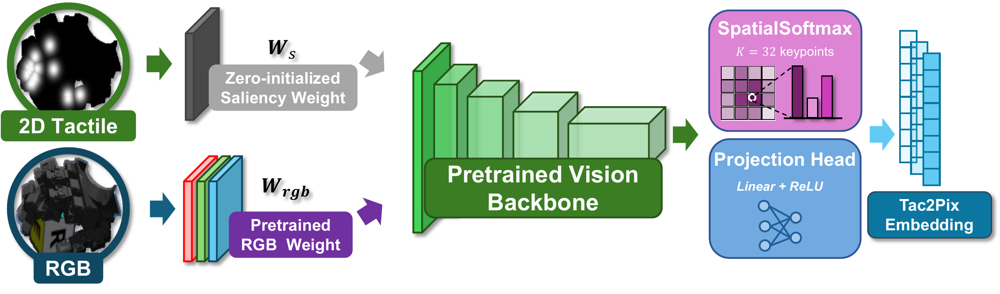
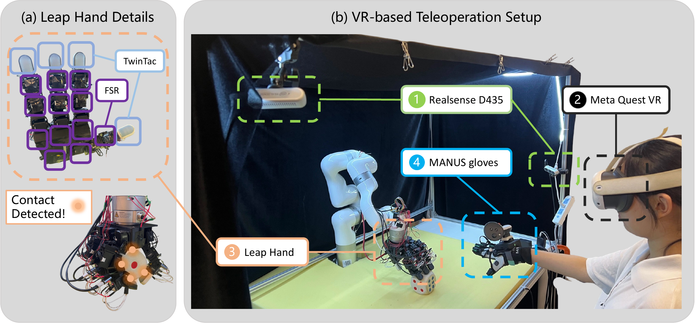
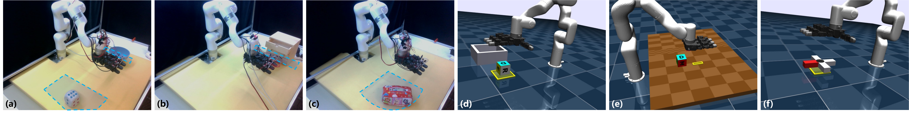
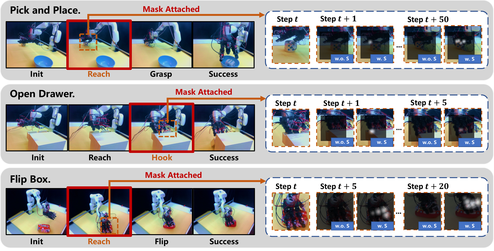
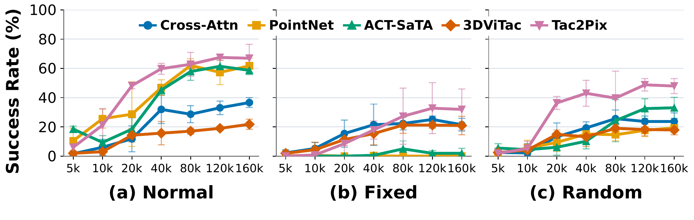
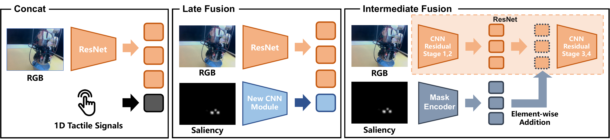

Fixed
A task-specific software mask is activated after a predefined interaction stage and stays in place.
Touch in the same pixel space as vision
Under review at ICLR 2027
Normalized tactile responses are localized with robot kinematics and projected through calibrated cameras into RGB pixel coordinates.
Tactile magnitude controls both the strength and spatial support of projected Gaussian cues. Overlapping responses are combined by taking their maximum.
A lightweight convolutional or patch-input adaptation integrates touch while preserving the pretrained RGB pathway at initialization.
Vision and touch are naturally complementary for dexterous manipulation, yet visual observations are dense and spatially structured while tactile measurements are sparse, heterogeneous, and robot-centric. Each tactile measurement is attached to a known location on the robot’s kinematic chain. Can this localization prior provide a shared representation that explicitly aligns touch with vision?
We introduce Tac2Pix, an image-space visuo-tactile fusion framework that projects sparse tactile measurements onto the RGB image plane using forward kinematics and camera calibration, then renders them as force-aware saliency maps. By expressing touch in the same pixel space as vision, Tac2Pix directly leverages pretrained 2D visual representations. Zero-initialized input adaptation preserves the original visual pathway at the start of policy learning.
We evaluate Tac2Pix on three simulated and three real-world dexterous manipulation tasks. Simulation experiments span four policy architectures and multiple visual backbones. Across the three real-world tasks, Tac2Pix improves average success under fixed visual occlusion by 26.7 percentage points over the strongest latent visuo-tactile fusion baseline. An additional three-seed Pick-and-Place evaluation tests robustness under fixed, random, and physical occlusions.

Geometric alignment uses known sensor locations and calibrated cameras. The 2D projection does not retain full contact-depth information.
Real-world experiments use an xArm6 robot equipped with a LEAP Hand. The hand provides tactile readings from 12 joint-mounted FSR sensors and 4 fingertip TwinTac sensors, yielding 44 projected tactile nodes. Two calibrated RealSense D435 cameras provide RGB observations.
Policies are trained from normal, unobstructed demonstrations. The main evaluation compares normal observations with a fixed software mask; additional robustness studies consider moving random masks and physical occlusion.



Three simulated manipulation tasks, four policy architectures, and six fusion mechanisms. Tac2Pix ranks first or second in most settings, with gains that depend on the task and policy.
| Fusion | Pick-and-Place | Cube-Push | Rotate-Cross | ||||||
|---|---|---|---|---|---|---|---|---|---|
| Normal | Occ. | Avg. | Normal | Occ. | Avg. | Normal | Occ. | Avg. | |
| Vision-Only | 7.4 | 0.0 | 3.7 | 33.3 | 0.0 | 16.7 | 10.0 | 2.0 | 6.0 |
| Concat | 13.2 | 0.0 | 6.6 | 41.7 | 0.0 | 20.8 | 28.0 | 6.0 | 17.0 |
| FiLM | 6.6 | 0.0 | 3.3 | 50.0 | 3.3 | 26.7 | 8.0 | 0.0 | 4.0 |
| CLIP-style | 3.3 | 0.0 | 1.7 | 38.3 | 3.3 | 20.8 | 28.0 | 2.0 | 15.0 |
| Cross-Attn | 3.3 | 8.3 | 5.8 | 45.0 | 21.7 | 33.3 | 18.0 | 6.0 | 12.0 |
| Ours (Tac2Pix) | 15.7 | 0.8 | 8.3 | 53.3 | 6.7 | 30.0 | 38.0 | 8.0 | 23.0 |
| Fusion | Pick-and-Place | Cube-Push | Rotate-Cross | ||||||
|---|---|---|---|---|---|---|---|---|---|
| Normal | Occ. | Avg. | Normal | Occ. | Avg. | Normal | Occ. | Avg. | |
| Vision-Only | 58.7 | 0.0 | 29.3 | 75.0 | 1.7 | 38.3 | 66.0 | 16.0 | 41.0 |
| Concat | 67.8 | 5.8 | 36.8 | 80.0 | 0.0 | 40.0 | 92.0 | 20.0 | 56.0 |
| FiLM | 36.4 | 0.8 | 18.6 | 71.7 | 13.3 | 42.5 | 60.0 | 18.0 | 39.0 |
| CLIP-style | 38.0 | 19.0 | 28.5 | 60.0 | 48.3 | 54.2 | 68.0 | 40.0 | 54.0 |
| Cross-Attn | 67.8 | 6.6 | 37.2 | 68.3 | 23.3 | 45.8 | 84.0 | 26.0 | 55.0 |
| Ours (Tac2Pix) | 71.9 | 23.1 | 47.5 | 85.0 | 46.7 | 65.8 | 90.0 | 44.0 | 67.0 |
| Fusion | Pick-and-Place | Cube-Push | Rotate-Cross | ||||||
|---|---|---|---|---|---|---|---|---|---|
| Normal | Occ. | Avg. | Normal | Occ. | Avg. | Normal | Occ. | Avg. | |
| Vision-Only | 71.9 | 7.4 | 39.7 | 96.7 | 25.0 | 60.8 | 78.0 | 26.0 | 52.0 |
| Concat | 72.7 | 14.9 | 43.8 | 90.0 | 25.0 | 57.5 | 80.0 | 38.0 | 59.0 |
| FiLM | 71.9 | 13.2 | 42.6 | 95.0 | 38.3 | 66.7 | 64.0 | 42.0 | 53.0 |
| CLIP-style | 62.0 | 24.8 | 43.4 | 85.0 | 43.3 | 64.2 | 64.0 | 48.0 | 56.0 |
| Cross-Attn | 42.1 | 34.7 | 38.4 | 71.7 | 46.7 | 59.2 | 70.0 | 52.0 | 61.0 |
| Ours (Tac2Pix) | 77.7 | 52.1 | 64.9 | 90.0 | 43.3 | 66.7 | 92.0 | 40.0 | 66.0 |
| Fusion | Pick-and-Place | Cube-Push | Rotate-Cross | ||||||
|---|---|---|---|---|---|---|---|---|---|
| Normal | Occ. | Avg. | Normal | Occ. | Avg. | Normal | Occ. | Avg. | |
| Vision-Only | 62.8 | 34.7 | 48.8 | 76.7 | 10.0 | 43.3 | 82.0 | 64.0 | 73.0 |
| Concat | 63.6 | 28.9 | 46.3 | 61.7 | 30.0 | 45.8 | 84.0 | 64.0 | 74.0 |
| FiLM | 57.0 | 28.1 | 42.6 | 68.3 | 31.7 | 50.0 | 78.0 | 60.0 | 69.0 |
| CLIP-style | 55.4 | 32.2 | 43.8 | 68.3 | 11.7 | 40.0 | 84.0 | 50.0 | 67.0 |
| Cross-Attn | 55.4 | 38.0 | 46.7 | 70.0 | 26.7 | 48.3 | 72.0 | 64.0 | 68.0 |
| Ours (Tac2Pix) | 69.4 | 36.4 | 52.9 | 71.7 | 31.7 | 51.7 | 84.0 | 72.0 | 78.0 |
Tactile-enabled methods use the same 44 tactile measurements. Policies are learned from unobstructed demonstrations; software occlusion is introduced at evaluation.

Holding the task and policy fixed, we change the visual encoder. Tac2Pix achieves the highest occluded success among the compared methods for R3M, VIP, and ResNet.
| Method | R3M | VIP | ResNet |
|---|---|---|---|
| Vision-Only | 46.3 / 9.9 | 48.8 / 9.9 | 58.7 / 0.0 |
| Cross-Attn | 49.6 / 4.1 | 27.3 / 25.6 | 67.8 / 6.6 |
| Tac2Pix | 41.3 / 28.9 | 63.6 / 27.3 | 71.9 / 23.1 |
Diffusion Policy on Pick-and-Place, Open Drawer, and Flip Box. One training seed; 20 trials per task and visual condition. Success rates are averaged across the three tasks.
| Method | Normal Avg. | Occluded Avg. |
|---|---|---|
| Vision-Only | 56.7% | 10.0% |
| Concat | 55.0% | 13.3% |
| Cross-Attn | 35.0% | 25.0% |
| Ours (Tac2Pix) | 66.7% | 51.7% |
| Method | Pick-and-Place | Open Drawer | Flip Box |
|---|---|---|---|
| Vision-Only | 9/20 / 0/20 | 12/20 / 4/20 | 13/20 / 2/20 |
| Concat | 9/20 / 1/20 | 10/20 / 6/20 | 14/20 / 1/20 |
| Cross-Attn | 4/20 / 0/20 | 6/20 / 4/20 | 11/20 / 11/20 |
| Ours (Tac2Pix) | 9/20 / 7/20 | 14/20 / 10/20 | 17/20 / 14/20 |
A three-seed real-world Pick-and-Place evaluation tests changes in the occlusion pattern and compares image-space grounding with adapted spatial tactile representations.
A task-specific software mask is activated after a predefined interaction stage and stays in place.
The same-size mask moves every 20 frames among task-relevant regions. Methods share the same mask schedule.
A human dynamically occludes the camera in the real world. The RGB stream is not digitally masked.
| Method | Normal | Fixed Occ. | Random Occ. | Physical Occ. |
|---|---|---|---|---|
| Vision-Only | 41.7 ± 4.7 | 6.7 ± 9.4 | 23.3 ± 15.5 | 25.0 ± 4.1 |
| Cross-Attn | 25.0 ± 4.1 | 6.7 ± 4.7 | 10.0 ± 4.1 | 21.7 ± 6.2 |
| 3D-ViTac (adapted) | 5.0 ± 4.1 | 0.0 ± 0.0 | 0.0 ± 0.0 | 1.7 ± 2.4 |
| SaTA (adapted) | 13.3 ± 2.4 | 0.0 ± 0.0 | 5.0 ± 0.0 | 3.3 ± 2.4 |
| Ours (Tac2Pix) | 46.7 ± 2.4 | 25.0 ± 7.1 | 28.3 ± 8.5 | 31.7 ± 4.7 |
This one-task, three-seed evaluation is separate from the three-task averages above. Its seeds include the original Pick-and-Place run. 3D-ViTac and SaTA are adapted to our sparse tactile sensing setup; the comparison is specific to these adaptations.
Fresh Tac2Pix Pick-and-Place rollouts show a successful placement and a failed attempt under a moving software mask. White contact cues visualize the tactile saliency supplied to the policy.
Simulation protocol: a 240 × 120 pixel mask moves across each 640 × 480 camera view every 20 control steps, starting at step 0. These selected examples are separate from the real-world evaluation above; they are not a success-rate estimate. The unobstructed observer view shows the same masked-policy trajectory, not a separate evaluation. Playback: 30 fps.
Six fusion methods are shown for each simulated scene, with normal observations on the left and occluded observations on the right.
Four real-world fusion methods are shown for each scene, preserving the same single-image size as the simulation grid.
Diffusion Policy on Pick-and-Place: tactile rendering, fusion and initialization, and touch–image alignment.
Force-aware Tac2Pix reaches 77.7% normal and 52.1% fixed-occlusion success on simulated Pick-and-Place. Binary contact already provides a geometric prior; force modulation adds information about contact strength.
Selected normal-condition Pick-and-Place rollouts from the left camera. RGB and saliency within each pair are synchronized; each variant follows its own policy trajectory. All clips play at 30 fps.
| Variant | Normal (%) | Fixed Occ. (%) | Average (%) |
|---|---|---|---|
| Vision-only | 71.9 | 7.4 | 39.7 |
| RGB Overlay | 66.9 | 28.1 | 47.5 |
| Binary Tac2Pix | 70.2 | 44.6 | 57.4 |
| Tac2Pix (Force-aware) | 77.7 | 52.1 | 64.9 |
We shift the tactile saliency map while leaving RGB unchanged. Performance generally decreases with spatial misalignment, particularly under occlusion; the effect need not be monotonic at every offset.
| Setting | Condition | 0 px | 25 px | 50 px | 100 px |
|---|---|---|---|---|---|
| Sim | Normal | 77.7% | 71.9% | 71.1% | 67.8% |
| Sim | Fixed Occ. | 52.1% | 27.3% | 31.4% | 18.2% |
| Real | Normal | 9/20 | 8/20 | 5/20 | 5/20 |
| Real | Fixed Occ. | 7/20 | 4/20 | 3/20 | 3/20 |
Early tactile injection and zero-initialized input adaptation work together. Removing zero initialization reduces success under both normal and occluded observations.

| Architecture | Normal (%) | Fixed Occ. (%) | Average (%) |
|---|---|---|---|
| Late Fusion | 64.5 | 14.0 | 39.3 |
| Intermediate Fusion | 69.4 | 26.4 | 47.9 |
| Early w/o Zero Init. | 49.6 | 21.5 | 35.6 |
| Tac2Pix (Early) | 77.7 | 52.1 | 64.9 |